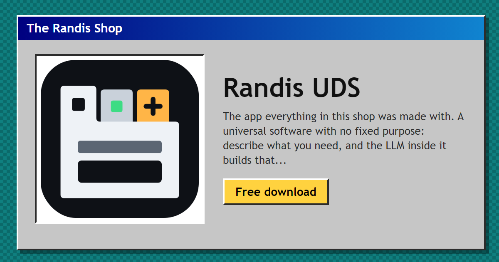

Randis UDS

The app everything in this shop was made with. A universal software with no fixed purpose: describe what you need, and the LLM inside it builds that into the app while you're using it.
Made with Randis UDS, a free desktop app that builds the tools you describe.